PRONTO PARA CONFERIR (27/10/2026). Ramo obra-etapa10b-2026-10-26. Teste de olho (as fotos) e de máquina
(tests/test_etapa10b_imagem.py: cada defeito tem uma medida que falha no código de antes e passa no de agora).
O critério do Samuel: "Eu quero que o papel saia branco, e o desenho também saia perfeito."
Cada foto diz por onde a página passou e com quais opções. "Antes" = o programa de hoje (ab38208); "Agora" = esta
etapa. Só páginas que vão ser impressas.
Palavras do teste dos livros: "No Palatino 74 [...] o fundo virou chuvisco preto e branco com manchas pretas grandes; no Valadés 41 [...] o traço fino virou áreas pretas chapadas e os rostos perderam detalhe."
O que olhar: as manchas e áreas pretas chapadas sumiram. O que mudou: a mancha escura pequena da gravura era enchida de preto inteira; agora só o que é tinta de verdade fica preto. Medida: bloco preto onde o original não é tinta cheia — Palatino 74: 1,4% da página → 0,003%; Valadés 41: 2,0% → 0,05%.
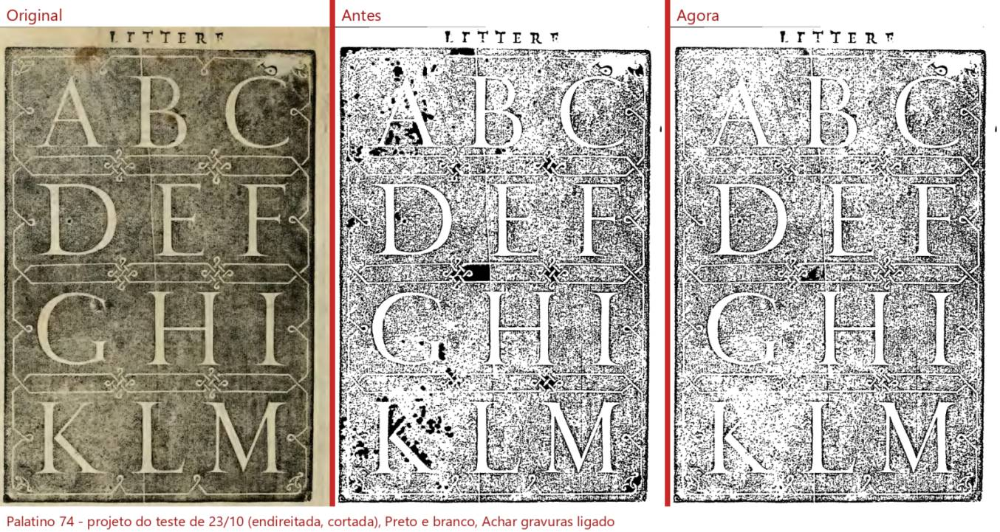
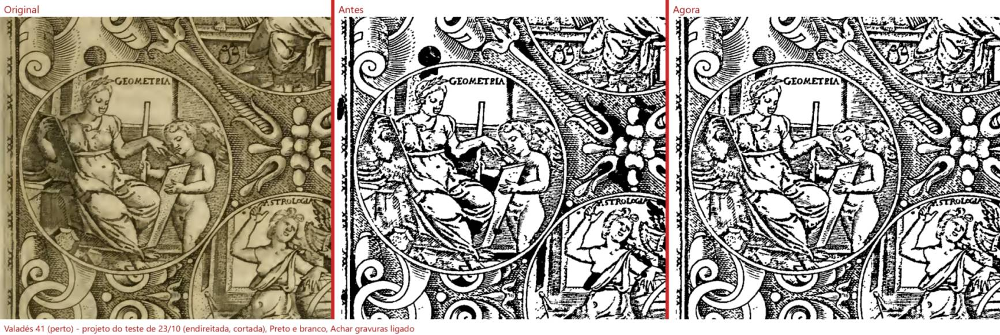
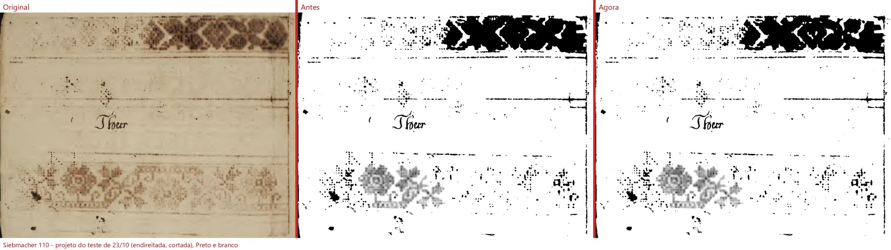
Ressalva: no Siebmacher 110 (projeto do teste) a faixa de bordado de cima não estava marcada como gravura e continua um bloco preto (é a marcação, não esta conta; num livro novo o programa acha a faixa). o fundo manchado da gravura em madeira (Palatino 74) continua "chuviscado": em preto e branco puro ele só sai assim. Em tons de cinza (como as fotos) ele fica igual ao original — pergunta 3 abaixo.
Palavras: "Uma folha de guarda branca sai cinza e toda manchada: a textura e as rugas do papel viram desenho (Boécio 49, Marial 2)."
O que olhar: o papel da folha de guarda sai branco; o carimbo do Marial 2 continua. Medida (Boécio 49): mediana 189 → 238; parte da página abaixo de 200: 65% → 6%.
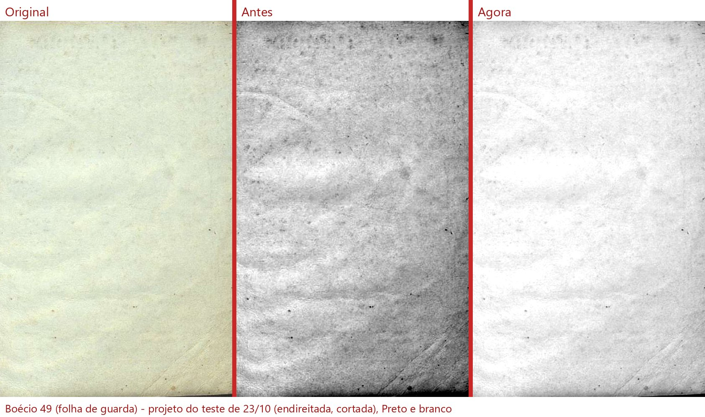
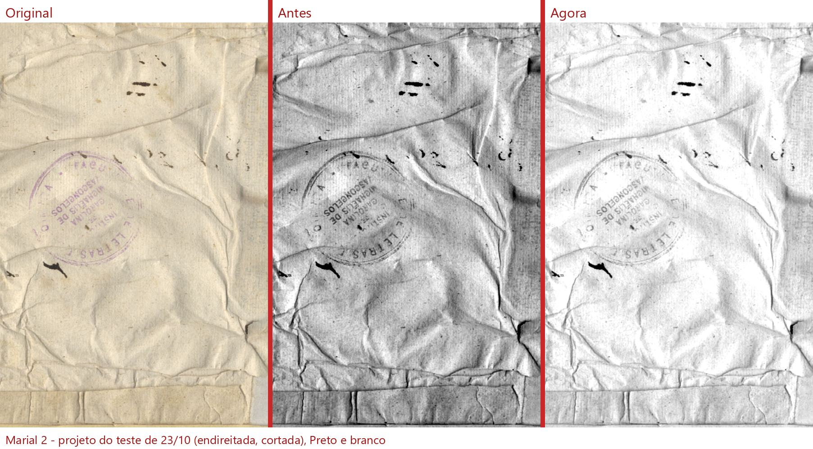
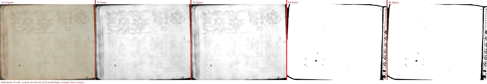
Ressalva: o Marial 2 é um papel amassado de verdade: as rugas ficam claras, mas aparecem. O Siebmacher 74 quase não muda: é uma folha com bordados muito fracos, e o desenho fraco continua à vista. No Siebmacher 86 o desenho muito fraco some no Preto e branco (já era assim; o borrão preto não volta).
Palavras: "Matemática 66 (e 92): cada número de questão com sombreado cinza virou borrão preto. Matemática 40 (e 118): as primeiras letras de cada linha, perto da lombada, sumiram ('Suponha que' → '~cha que')." A etapa 10a provou que o corte estava certo; o defeito era do Preto e branco na sombra da lombada.
O que olhar: na 66 a faixa preta da esquerda sumiu e os números voltaram; na 40 as primeiras palavras voltam (como borrões escuros, porque no original elas também estão borradas). Medidas: 66, faixa da esquerda preta 4,7% → 0,3%; 40, tinta na faixa da sombra 7,1% → 13%.
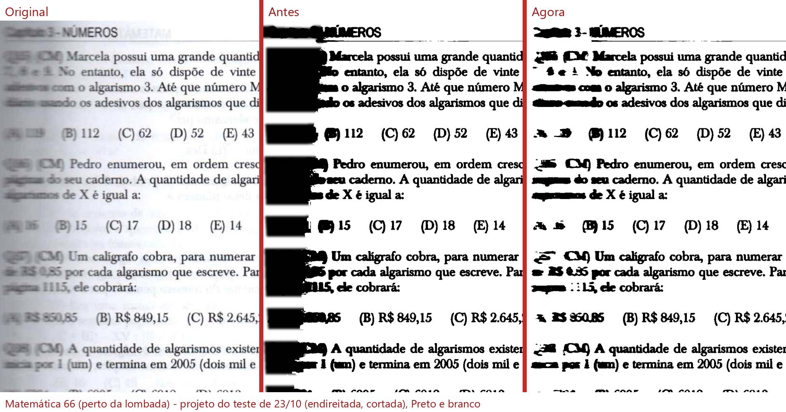
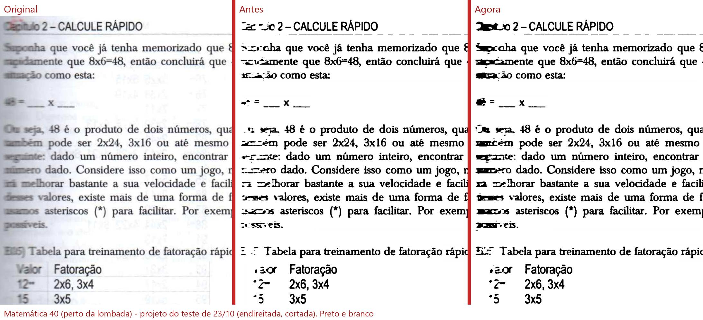
"Páginas fotografadas (celular): o Preto e branco transforma a sombra da mão ou da página numa grande mancha preta."
O que olhar: a sombra da esquerda (Razões) e a da mão (Atanásio) não viram mais mancha preta.
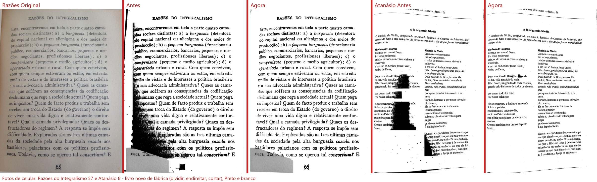
"O bordado ficou bom, mas o cartão marrom em volta virou um remendo: o título e cada bloco de texto ganharam um retângulo branco por cima, com a letra engrossada, e sobrou uma tira branca torta na beirada esquerda."
O que olhar: o cartão fica marrom inteiro, com o título e o texto como no original (como foram escaneados); a prancha clara continua branca. Medida (Pesel 51): parte do cartão que saía branca 32% → 5%.
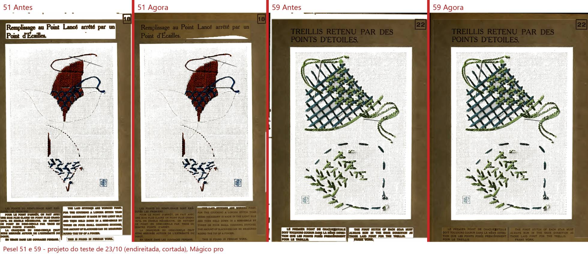
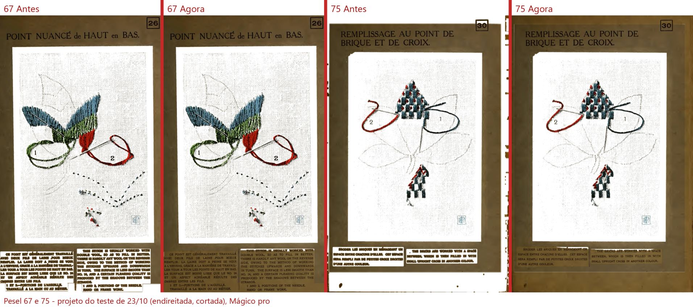
Ressalva: no Pesel 51 sobra uma cunha clara fina entre o título e a prancha.
"Valadés 203: uma mancha marrom pequena em cima de uma palavra virou um ponto preto em cima de 'Idiomate'." · "Antiphon 56: sobraram pontinhos laranja das manchas do pergaminho na margem da direita."
O que olhar: o ponto preto saiu (fica um pedacinho onde a mancha é tão escura quanto a tinta); os pontinhos laranja da margem saíram (2.656 → 183). O retângulo cinza do Antiphon é o 4.6 (outra etapa).
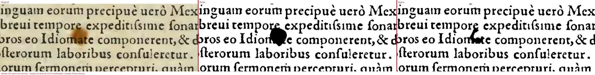
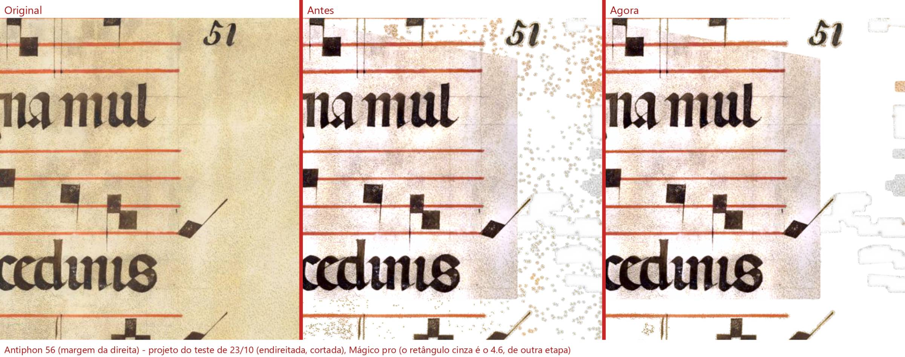
"No 'Só as letras', a tela mostra o que o PDF não tem." Decisões: "precisamos que o pdf saia que nem está na tela" (D-066) e "Tela e PDF saem da mesma conta" (D-473).
O que olhar: a T aparece na tela e no PDF. A conta que decide o que fica passou a ser a mesma nos dois tamanhos.
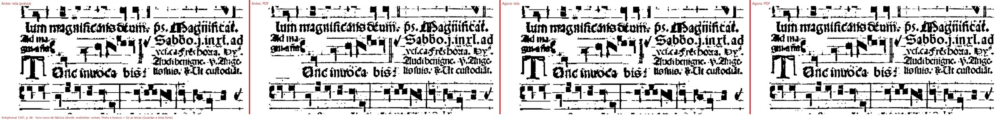
lu-tc-igual, D-193)"O pdf está saindo diferente da tela gerada, na tela gerada a letra está mais grossa, isso é um perigo [...]"
O que olhar: na tela cheia a letra tem agora a grossura do PDF (antes 10 a 17% mais grossa; agora 4 a 9% mais fina, porque a tela é preto e branco em 150 DPI). Para ficar igual de verdade falta a tela trocar sozinha pela imagem do PDF (a parte de tela, com as duas bolinhas, fica com a gerente).
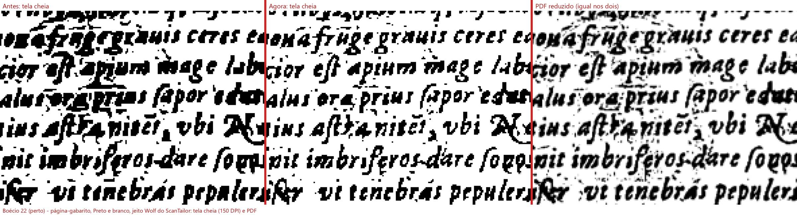
"Ele está apagando as letras [...]" · "aprovado, mas ainda tem que melhorar, em alguns casos, ele acaba apagando a letra."
O que olhar: com "Reduzir cores", cada palavra fica inteira numa cor só (antes, metade preta e metade clara). Medida: letras que viravam preto 20% → 0,1%.
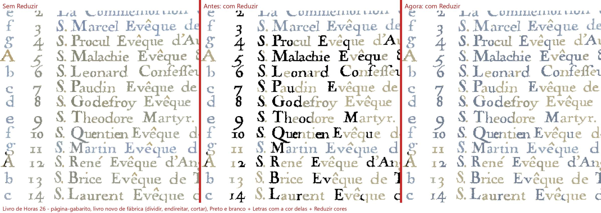
"Com Mágico pro e Melhorar o PDF sai de 15 a 20 vezes maior que o original [...] Difícil de guardar, copiar e mandar para a gráfica."
A causa: o programa guardava cada página de cor sem perda nenhuma, com todo o grão do scan. Agora vai em JPEG de qualidade alta (92). O PDF fica 1,4 a 10 vezes menor (Antiphon 56: 20 MB → 4 MB por página; o livro de 1.590 MB iria para ~330 MB). A diferença para a imagem de antes é de 1 a 3 tons de 255 (não se vê). O Preto e branco puro continua sem perda. Tabela completa no ONDE-PAREI. Pergunta 2 abaixo (dá para ficar 2 a 4 vezes menor ainda).
O que olhar: com "Desentortar aumentando a página", seguindo só o bloco do texto, a página curva sai com as linhas mais retas (à direita). Mas não liguei para todo livro: ligado, entortava uma página reta (Marial 41) e cortava o começo das linhas do Righetti 96. Pergunta 1 abaixo.
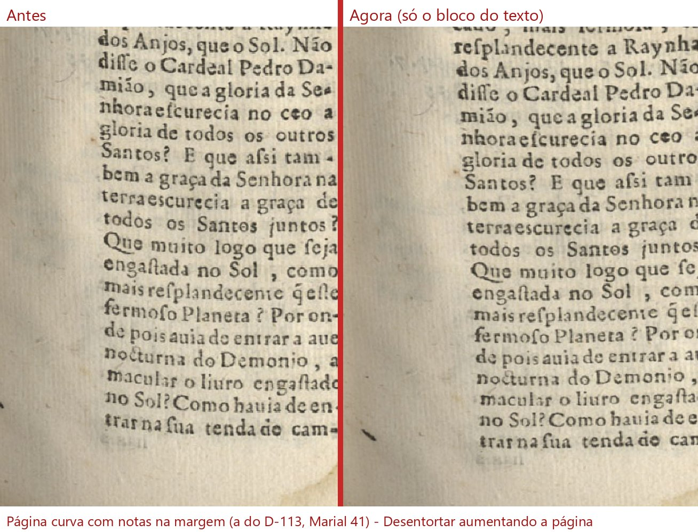
Original: nada mudou (32 de 32). Preto e branco: mudam as páginas com sombra na beirada ou com gravura (diferenças pequenas). Melhorar: mudam todas, pouco (o grão do papel); o Opus 20 muda mais: o vão escuro atrás da estátua deixou de ter os pontinhos brancos (a queixa "esses pontos estão horríveis atrás da estátua", conferência 6).
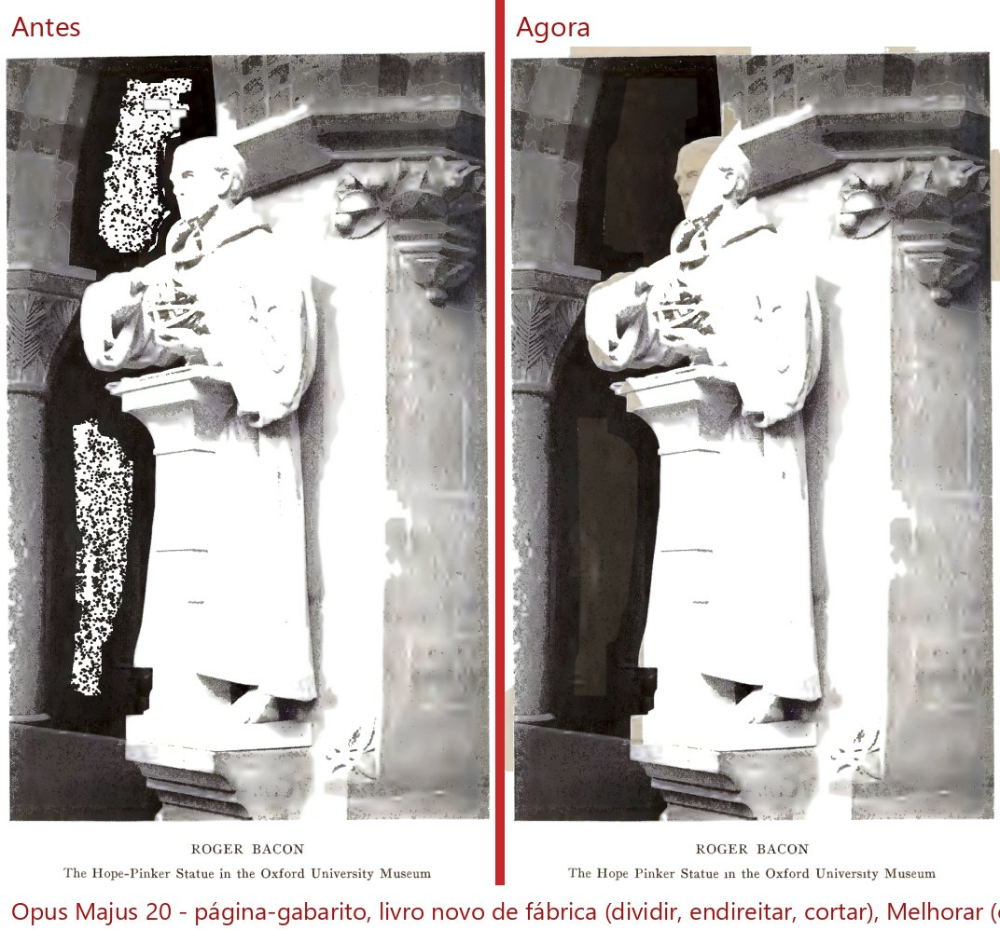
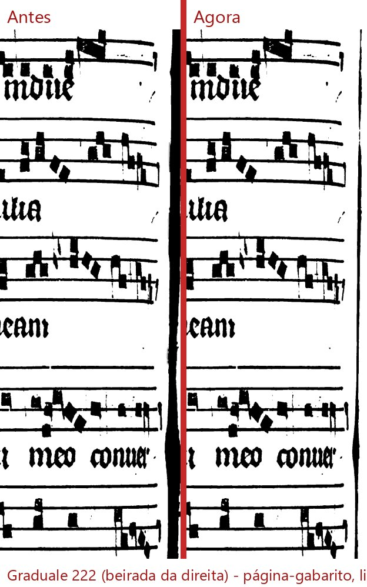
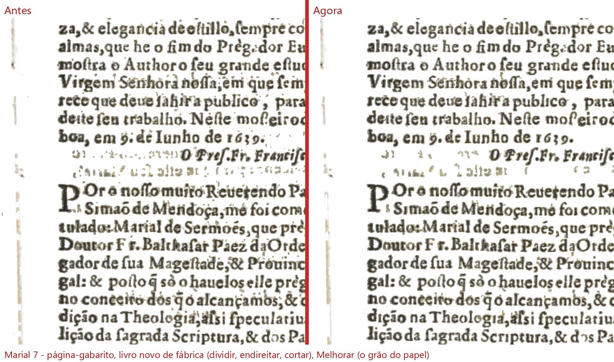
Os defeitos da lista saíram nas páginas apontadas, com medida antes e agora e teste que pega a volta. O que não ficou perfeito está nas ressalvas e nas três perguntas. Quem confere é o Samuel.
Editor de Impressão · gerado em 27/10/2026 às 13:14